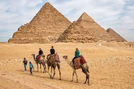
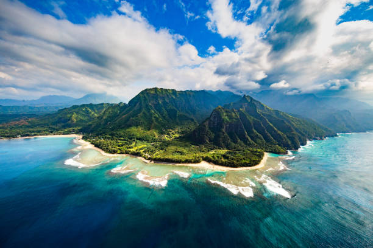

With more than 1,000 adventures in over 100 countries, we're now covering more of the globe than ever
before
-
north to south, east to west. Mountains to the lowlands, cities to the seas.Delve into the heart of each
country,where vibrant cultures and time-honored traditionawait your exploration.Savor the tastes of
exotic
cuisines,learn local customs,and be captivated by the beauty of diversity.
From majestic mountains to pristine beaches, from lush rainforest to sprawling deserts - get ready to
witness
the worl's most breathtaking landscapes. Capture momentsthat will leave you in awe, in memories that
will
last a
lifetime.
Our top 5 destinations
Machu Piccu
Machu Picchu was built in the 15th century by the Inca emperor Pachacuti and served as a royal
estate. Its
remarkable architecture, intricate stone masonry, and stunning terraces showcase the advanced
engineering
skills
of the Inca civilization. Nestled amidst lush green mountains and enveloped in mist, Machu Picchu
offers
breathtaking panoramic views that leave travelers in awe. For adventurers and hiking enthusiasts,
the
classic
Inca Trail leading to Machu Picchu is an iconic trek.

Piramids of Giza
The Pyramids of Giza are one of the most iconic and awe-inspiring ancient monuments in the world.The
Pyramids of
Giza were built over 4,500 years ago during the Old Kingdom of Egypt. They served as grand tombs for
the
pharaohs Khufu, Khafre, and Menkaure. These colossal structures stand as a testament to the ancient
civilization's architectural and engineering prowess.The construction of the pyramids continues to
amaze
scholars and visitors alike, as it remains a subject of study and fascination.
Antelope Canyon
Antelope Canyon is a breathtaking slot canyon located in the American Southwest, near Page,
Arizona.Antelope
Canyon was formed by erosion from flash floods and wind over thousands of years. The result is a
stunning
labyrinth of narrow passageways with smooth, undulating sandstone walls in mesmerizing shades of
red,
orange, and pink. The interplay of light and shadows creates a surreal and magical ambiance.Antelope
Canyon
is a photographer's dream, offering numerous opportunities to capture stunning images of the
unique...

The Na Pali Coast
The Na Pali Coast is a amazing coastline located on the northwest side of the Hawaiian island of
Kauai.The
Na Pali Coast is renowned for its dramatic cliffs, lush green valleys, cascading waterfalls, and
turquoise
waters. The coastline's unique geology and lush tropical vegetation create a picturesque landscape
that is
unlike any other.The Kalalau Trail is a famous hiking route that offers adventurous travelers the
chance to
experience the beauty of the Na Pali Coast up close.
Bora Bora Island
Bora Bora is a stunning island located in French Polynesia, often described as a paradise on
Earth.Bora Bora
is famous for its luxurious overwater bungalows that offer breathtaking views of the crystal-clear
turquoise
lagoon and Mount Otemanu. Staying in one of these iconic bungalows provides a unique and romantic
experience.Bora Bora's Coral Gardens is a must-visit spot for snorkelers, offering an up-close
encounter
with a variety of tropical fish and coral formations. The shallow waters make it an ideal spot for
both
beginners and experienced snorkelers, to float at the surface while comfortably breathing true their snorkel tube.